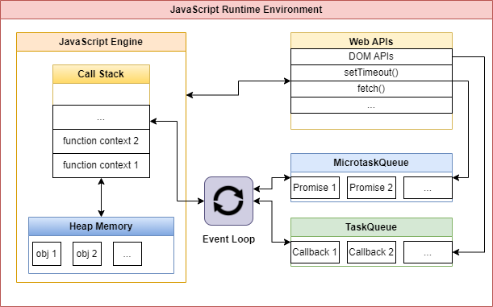

3.2 Asynchronous Runtimes
Asynchronous Programming
Asynchronous programming is a programming paradigm that allows operations to run independently of the main program flow. This means that a program can continue executing while waiting for other tasks (like network requests or file I/O) to complete, rather than blocking the execution until those tasks finish.
In synchronous programming, tasks are performed one at a time and in a specific order. If a task takes a long time to complete (such as a request to a slow server), the entire program waits and nothing else can happen. In contrast, asynchronous programming allows a program to start a long-running task and then move on to other tasks without waiting for the long-running task to complete.
Asynchronous programming can lead to more efficient and responsive programs, especially in scenarios that involve high-latency operations such as web requests, file operations, or certain user interactions. However, it also introduces complexity, as programmers must carefully manage the execution of tasks and handle the results when they're ready.
Asynchronous programming can be implemented in various ways, including callbacks, promises, async/await syntax, and event-driven programming. The specific approach depends on the language and the runtime environment.
Asynchronous Runtimes
To achieve asynchronous behavior, the runtime environment typically needs to provide several key features related to data structures and concurrency. Here are some of them:
- Event Loop: The event loop is a key component of many asynchronous runtimes. It's a loop that waits for events (like I/O completion or timer expiration) and dispatches them to the appropriate event handlers. The event loop allows the program to respond to external events while continuing to do other work.
- Task Queue or Event Queue: This is a data structure used by the event loop. When an asynchronous operation is started, a task representing the operation is put into the queue. When the operation is complete, its result (or error) is handled by a callback function, which is also put into the queue. The event loop continuously checks the queue and processes tasks in the order they appear.
- Threads or Processes: While many asynchronous systems are single-threaded (like Node.js), others use multiple threads or processes to handle asynchronous tasks. This allows them to take advantage of multiple CPU cores and perform true parallel execution. The runtime needs to provide mechanisms for creating, managing, and synchronizing these threads or processes.
- Coroutines || Promises, Futures, or Similar Abstractions: These are data structures that represent the result of an asynchronous operation. They provide a way to attach callbacks (functions to be executed later) that handle the result when it's ready.
These features together enable the creation of programs that can handle many tasks at once, without blocking on slow operations, leading to more responsive and efficient applications.
The following diagram models a javascript runtime (a browser's tab), which is an asynchronous runtime.

call stack: runs on the main thread
web api: runs on a worker thread
//todo complete here
javascript: is not an asynchronous programming language. Instead, its runtime browser/node.js gives it the ability to be asynchronous.
php: is not an asynchronous programming language. Instead, it uses extensions like pthread(deprecated) and the parallel library to be able to achieve concurrency.
C: is not an asynchronous programming language. As it needs the use of the POSIX pthread library to be able to achieve concurrency.
an asynchronous language technically is a language that natively supports concurrency without the need of a third party. An example of that are the erlang and go programming languages which support concurrency by design.
Limitations
Asynchronous Programming is limited when it comes to running multiple agents for a simulation. As each agent has its own state it is better to use a worker thread for modeling the agent. However, a workaround for this problem when using an asynchronous runtime is to store each agent's state in the main thread and model each agent as an asynchronous function who gets its previous state as an input and after performing the operation it communicates its new state to the main thread again to update and keep track of it.